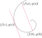

Org-Mode Testfile
Awesomeness in Emacs
Features
markup
TODO Tasks
NEXT Subtask
DEADLINE:
CANCEL Priorites alpha
WAIT More
LOOP Another
DONE Sched Task
Code
import math # A comment <-> def factorial(n): """" Docstring """ if (n==0): return 1 else: return n * factorial(n-1)
Citations
We can call citar-insert to insert references like (NO_ITEM_DATA:mooreCrammingMoreComponents1998).
There are 1 also footnotes. If at the definition, jump back to the reference. When called at a 2 footnote location with a prefix argument, offer the same menu as.
| It holds (that) … | We have … | Es gilt |
| fulfills property | satisfies property | erfüllt Eigenschaft |
| in average | on average | im Durchschnitt |
| … | ||
| monotonously increasing | monotonically increasing | monton steigend |
(NO_ITEM_DATA:rougierDesignTextEditors2020) See in test-table we can observe… Similarly 1 without org-ref?
MathPix export
Die Punkte in der Ebene kann man einerseits durch Ortsvektoren, anderseits durch kartesische Koordinaten charakterisieren: \[ \overrightarrow{O W}=\mathbf{w}=\left(\begin{array}{c} u \\ v \end{array}\right), \quad \overrightarrow{O Z}=\mathbf{z}=\left(\begin{array}{l} x \\ y \end{array}\right), \quad \ldots \]

Added as normal link (external)

\[ \mathbf{Q}=\left(\begin{array}{cc} \cos \varphi & -\sin \varphi \\ \sin \varphi & \cos \varphi \end{array}\right) \]
Writing \( \LaTeX \)
org-toggle-pretty-entities will replace them with nice unicode
We can do inline \( \exp (0) = 1 \) and also entire lines:
\[ \exp (x) = \sum_{k=1}^{\infty} \frac{x^k}{k!} \] \[ \exp (x) = \sum_{k=1}^{\infty} \frac{x^k}{k!} \]
In eq:1 we showed that blah blah.
LaaS
=> becomes \( \implies \) and ;a \( \alpha \)
xbar is \( \overline{x} \)
x,. \( \vec{x} \)
math-preview
There are some customized bindings
(math-preview-all)
Environments
1 + 1 = 2
qed.
You can still do this and that.
This is very dangerous. Without a title
A wise man once said
________________________________________
/ I never loved another person the way I \
| loved myself. |
| |
\ -- Mae West /
----------------------------------------
\ ^__^
\ (oo)\_______
(__)\ )\/\
||----w |
|| ||
An example text
I do not know what this verse block does.
Centered text
(defun Fib (n) (if (< n 2) n (+ (Fib (- n 1)) (Fib (- n 2)))))
Exporting docs
- how to set location, or other params
- stylesheet
:noexport:tag will be ignored.